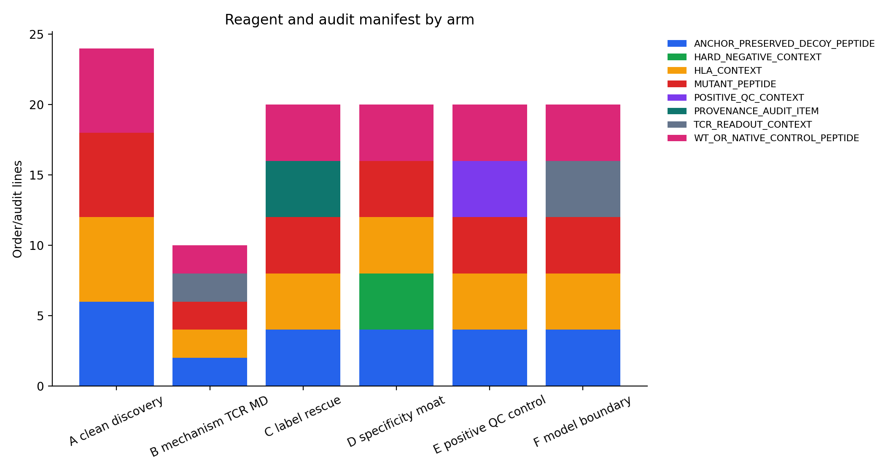
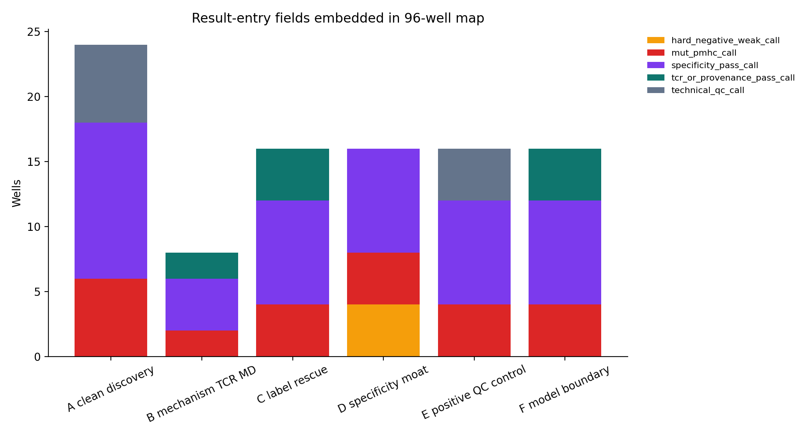
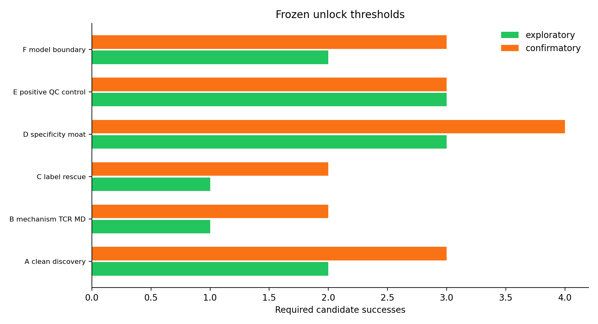

01TL;DR
No endpoint threshold was tuned in v6. The packet freezes v5 rules and makes the handoff auditable from reagent/order line to candidate PASS/FAIL to endpoint unlock.
02Frozen endpoints
| plate_v4_arm | n_candidates | threshold_successes | confirmatory_threshold_successes | main_text_claim_tier | confirmatory_false_unlock_risk_under_null | confirmatory_power_at_mean_prior |
|---|---|---|---|---|---|---|
| B_mechanism_TCR_MD | 2.000 | 1.000 | 2.000 | confirmatory_ready | 0.003 | 0.360 |
| A_clean_discovery | 6.000 | 2.000 | 3.000 | confirmatory_ready | 0.016 | 0.996 |
| C_label_rescue | 4.000 | 1.000 | 2.000 | confirmatory_ready | 0.014 | 0.979 |
| E_positive_QC_control | 4.000 | 3.000 | 3.000 | confirmatory_ready | 0.027 | 0.881 |
| D_specificity_moat | 4.000 | 3.000 | 4.000 | confirmatory_with_caveat | 0.062 | 0.275 |
| F_model_boundary | 4.000 | 2.000 | 3.000 | confirmatory_ready | 0.027 | 0.059 |
03Top execution manifest
| plate_v4_arm | candidate_id | peptide | hla_allele_4digit | order_batch | order_priority_score | candidate_success_definition |
|---|---|---|---|---|---|---|
| B_mechanism_TCR_MD | CNV0_01132 | GADGVGKSAL | HLA-C*08:02 | batch_1_claim_unlock | 0.737 | PASS if mutant pMHC binding is positive and TCR readout supports recognition |
| B_mechanism_TCR_MD | CNV0_01151 | HMTEVVRHC | HLA-A*02:01 | batch_1_claim_unlock | 0.718 | PASS if mutant pMHC binding is positive and TCR readout supports recognition |
| A_clean_discovery | CNV0_02708 | ALDPLLLRI | HLA-A*02:01 | batch_1_claim_unlock | 0.612 | PASS if mutant pMHC binding is positive and WT/decoy specificity is acceptable |
| A_clean_discovery | CNV0_02709 | ALPVALPSL | HLA-A*02:01 | batch_1_claim_unlock | 0.602 | PASS if mutant pMHC binding is positive and WT/decoy specificity is acceptable |
| A_clean_discovery | CNV0_02460 | GIVEGLITTV | HLA-A*02:01 | batch_1_claim_unlock | 0.593 | PASS if mutant pMHC binding is positive and WT/decoy specificity is acceptable |
| A_clean_discovery | CNV0_02448 | ILDKVLVHL | HLA-A*02:01 | batch_1_claim_unlock | 0.592 | PASS if mutant pMHC binding is positive and WT/decoy specificity is acceptable |
| A_clean_discovery | CNV0_02450 | KELEGILLL | HLA-B*44:03 | batch_1_claim_unlock | 0.579 | PASS if mutant pMHC binding is positive and WT/decoy specificity is acceptable |
| A_clean_discovery | CNV0_02452 | LLDGFLATV | HLA-A*02:01 | batch_1_claim_unlock | 0.578 | PASS if mutant pMHC binding is positive and WT/decoy specificity is acceptable |
| C_label_rescue | CNV0_00682 | NYRREPPHL | HLA-C*07:02 | batch_2_risk_resolution | 0.575 | PASS if mutant pMHC binding is positive and provenance audit resolves the label-noise hypothesis |
| C_label_rescue | CNV0_00711 | RREPPHLARNF | HLA-C*07:02 | batch_2_risk_resolution | 0.574 | PASS if mutant pMHC binding is positive and provenance audit resolves the label-noise hypothesis |
| C_label_rescue | CNV0_00027 | GNNDVKEDP | HLA-C*07:02 | batch_2_risk_resolution | 0.573 | PASS if mutant pMHC binding is positive and provenance audit resolves the label-noise hypothesis |
| C_label_rescue | CNV0_00006 | VKEDPKWEF | HLA-C*07:02 | batch_2_risk_resolution | 0.573 | PASS if mutant pMHC binding is positive and provenance audit resolves the label-noise hypothesis |
| D_specificity_moat | CNV0_02458 | IIGAGPAEV | HLA-A*02:01 | batch_2_risk_resolution | 0.539 | PASS if hard-negative candidate remains weak/non-binding under the same assay context |
| D_specificity_moat | CNV0_02420 | KLANPLPYT | HLA-A*02:01 | batch_2_risk_resolution | 0.539 | PASS if hard-negative candidate remains weak/non-binding under the same assay context |
04Reviewer safeguards
| audit_item | source_file | required_before_unlock | failure_action |
|---|---|---|---|
| freeze_candidate_list | execution_candidate_manifest_v6.tsv | candidate list unchanged or deviations logged | mark deviation and keep claim exploratory |
| use_predeclared_thresholds | preregistered_endpoint_plan_v5.tsv | exploratory and confirmatory thresholds copied without post-hoc tuning | do not promote endpoint |
| candidate_success_call_trace | candidate_result_entry_v6.tsv + candidate_calls_v6.tsv | PASS/FAIL source documented for every counted candidate | treat missing or ambiguous candidates as pending |
| positive_controls_not_novelty | claim_boundary_execution column | E arm used for QC only | remove from novelty/discovery claims |
| overlap_blocked_candidates_labeled | leakage_risk_level + claim_boundary_execution | source-overlap status retained in final table | mechanistic/support only, no clean benchmark novelty |
| reviewer_risk::public/overlap leakage | wetlab_plate_v4_value_of_information.tsv | separate clean discovery from overlap-blocked positive controls | positive-control arm cannot support benchmark novelty |
| reviewer_risk::overfit fine-tuning | score_booster_cv_metrics.tsv + v4 summary | score booster selected only after source/HLA clean OOF; failed method-matrix stacker retained as negative diagnostic | small clean positive set n=35 |
| reviewer_risk::no wetlab interpretation rule | preregistered_endpoint_plan_v5.tsv | binomial endpoint plan plus predeclared go/no-go thresholds | assay-specific thresholds still need lab calibration |
| reviewer_risk::TCR/MD evidence overclaimed | claim_unlock_ladder_v5.tsv | TCR/MD arm unlocks mechanistic support only, not clean benchmark novelty or clinical claim | requires TCR readout or repeat MD to promote mechanism |
| reviewer_risk::label-noise rescue relabels negatives too casually | assay_96well_map_preregistered_v5.tsv | rescue requires provenance audit plus pMHC binding | provenance may fail and rescue claim must be dropped |
| reviewer_risk::clinical utility overclaim | claim_unlock_ladder_v5.tsv | clinical/patient layer remains locked in claim ladder | patient metadata and external validation still missing |
| reviewer_risk::multiple endpoint fishing | endpoint_power_curves_v5.tsv | exploratory thresholds fixed; stricter confirmatory thresholds added; null-risk sums exploratory=0.918, confirmatory=0.149 | descriptive exploratory package; not a pivotal clinical trial |
05Figures




06Sources + paths
Output directory: /home/seungho/personal/THCA_data_analysis/project/results/cross_neo_kaggle_winner_playbook_2026_05_10/execution_packet_v6_2026_05_10
Primary zip: /home/seungho/personal/THCA_data_analysis/project/results/cross_neo_kaggle_winner_playbook_2026_05_10/execution_packet_v6_2026_05_10/cross_neo_execution_packet_v6_2026_05_10.zip
Interpreter: /home/seungho/personal/THCA_data_analysis/scripts/interpret_cross_neo_assay_results_v6.py
Live page copied to: /var/www/papers/papers_hub_2026_05_04/cross_neo_execution_packet_v6.html